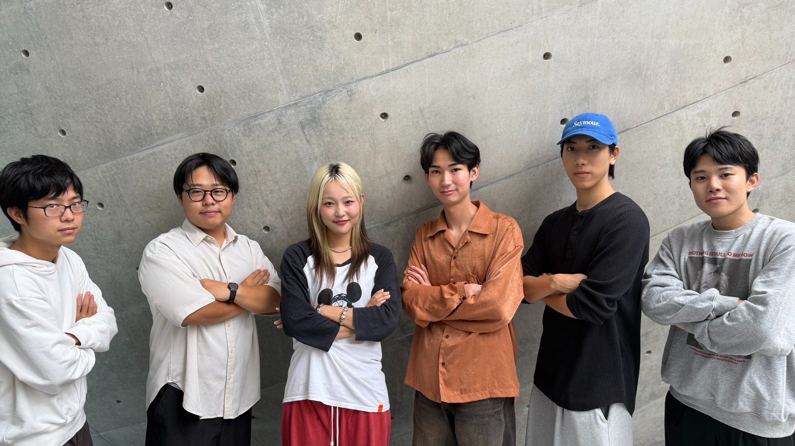

本研究室の学生6名のチームが，未踏型人材育成プログラム「ISHIN 2026」に採択されました
本研究室の学生6名によるチームが，未踏型人材育成プログラム「ISHIN 2026」（鹿児島版AKATSUKIプロジェクト）の課題自己定義コースに採択されました．8月1日のキックオフから約5か月間，メンターの支援を受けながら開発に取り組みます．
ISHIN は，鹿児島県内の若手人材を対象に，自ら課題を定義し，IT・テクノロジーを活用して解決に挑む人材育成プログラムです．2026年度は，審査を経て9組が採択されました．
採択されたプロジェクト「のんだどん」は，鹿児島の焼酎文化をITの側面から盛り上げることを目指す，焼酎のコレクションアプリです．味わった焼酎のボトルを撮影するだけで，AI が銘柄を判別し，自分だけのデジタルの棚にコレクションとして記録できます．
| プログラム | 未踏型人材育成プログラム「ISHIN 2026」（鹿児島版AKATSUKIプロジェクト）課題自己定義コース |
|---|---|
| プロジェクト名 | のんだどん |
| メンバー | M2 江藤 遥香，山下 旺亮 M1 石丸 隆稀，尾曲 軍将，川越 悠世，山田 智輝 |
| 関連リンク | ISHIN 2026 公式サイト（新しいタブで開きます） のんだどん 公式サイト（新しいタブで開きます） |
